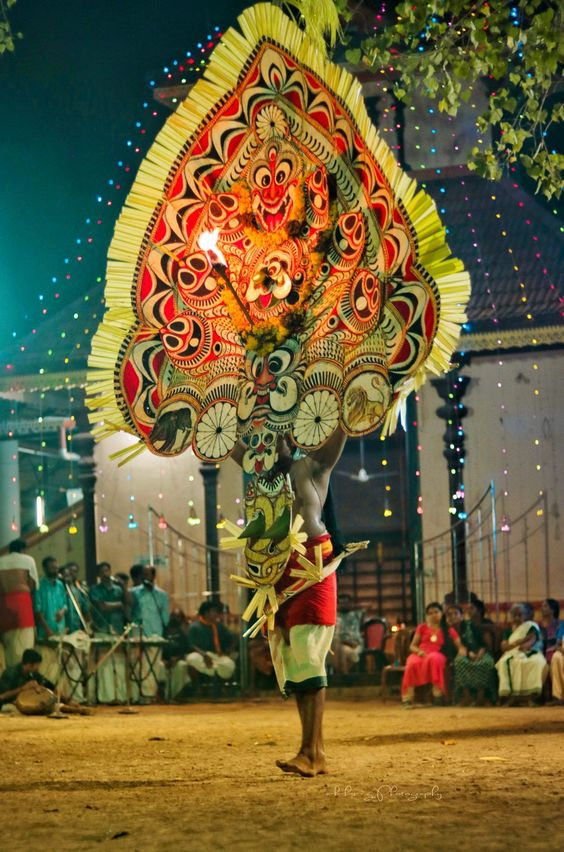

Padayani

Padayani, also known Padeni (from the Malayalam word for military formations), is a traditional folk dance and a ritual art from the central portion of the Indian state of Kerala. A ceremonial dance involving masks, it is an ancient ritual performed in Bhagavati temples. The dance is performed in honor of Bhadrakaali. Meaning, a 'row of warriors', Padayani is an art form that blends all music, dance, theatre, satire, facial masks, and paintings. It is part of worship of Bhadrakali and is staged in temples dedicated to the goddess from mid-December to mid-May.Padayani is unique to central Travancore, comprising the Pathanamthitta and kottayam districts of Kerala. Padayani is regarded as a remnant of the Dravidian forms of worship that existed before the advent of Brahmanism. Padayani is like Theyyam in north Kerala. The percussion instruments used in Patayani are patayani thappu, chenda, para and kumbham. Padayani at Puthukulangara Devi Temple, Othera, Pathanamthitta District is also famous. Here Bhairavi kolam which is on last day of festival is very famous. For making that 1001 bark of arecanut palm tree is used. Main festival is on star ThiruvathiraMeenamme month of Meena. "Pachathappu" is the first Malayalam film based on Padayani. Pachathappu is written and directed by Anu Purushoth.Nominated, Kerala Film Critics Award for Best Art Film of 2020
Devi Bhadrakali takes birth to kill the demons like Daruka who cannot be killed otherwise. In her Raudra or angry incarnation, she kills the demon. After killing, she is still raging with anger. In this state, she went to Kailasha – her father Shiva’s abode in the Himalayas.
Her anger must be pacified. So, Shiva and his Bhootganas wear masks made of leaves and dance to live music and sing songs to pacify her. Even then she does not get pacified. Then she sees her fearsome form drawn on the floor as Kolam and that amuses here. It is believed that first Kolam was drawn by none other than Karthikeyan. This is said to be the beginning of the ritual of Kalamezhuthum.